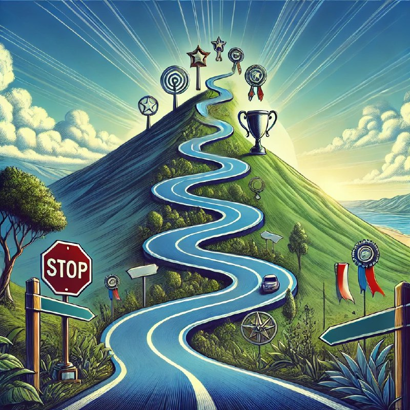

Барча тез хоҳлайди. Лекин «тез» узоқ йўлга юришни билмайди.

Ҳар бир инсон ўз мақсадларига тезроқ эришишни хоҳлайди, лекин барқарор ва мустаҳкам натижаларга эришиш учун вақт ва сабр талаб қилинади.
Тезкорлик кўпинча шошқалоқликка олиб келади, ва натижада ишлар чуқур ўйланган режа ва пухта тайёргарликсиз бажарилади. Бу эса узоқ муддатли барқарорликни таъминлаш ўрнига, қисқа муддатли муваффақиятларгагина олиб келади.
Ҳаётда энг мустаҳкам нарсалар – бу вақт, меҳнат ва тажриба орқали қўлга киритиладиган нарсалардир. Камол топиш, муваффақиятга эришиш ва ҳақиқий бахт – тезкор қадамлар эмас, балки босқичма-босқич эришиладиган ҳодисалардир. Шунинг учун ҳаётда барча ишларни сабр ва пухталик билан бажариш муҳимдир.
Тезлик керак бўлган жойларда ҳам ақл билан ҳаракат қилиш, шошилмаслик ва ҳар бир қадамни ўйлаб босиш энг тўғри йўлдир. Шундагина натижа нафақат тез, балки бардавом ҳам бўлади.